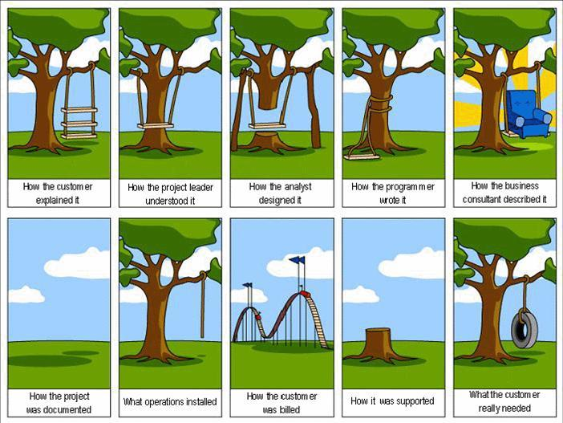

Hieman minusta
- Tietotekniikan harrastaja
- Tutkija TTY:llä
- Hakkeri
- Linux-harrastaja
Hieman minusta
Mitä tein viikko sitten?
Johdanto
- Ohjelmistot ja palvelut siirtyvät verkkoon
- Pilvipalvelut helpottavat tätä siirtymistä
- Tuotantoa voidaan automatisoida
- Toisaalta Lean- ja Agile-ajattelumallit nopeuttavat tuotantoa
Vesiputousmalli
- Insinöörimäinen ideaalimaailman suunnitelma
- Yritetään kapselointia ja ongelman paloittelua
- Riskit "tunnistetaan" ennakkoon
- Vaiheiden tiukat aikarajat ja riippuvuudet
- Rationaalinen ihmiskuva
Ongelmia
- Kaikki muuttuu koko ajan
- Riskejä ei voi arvioida
- Lopputulosta vaikea arvioida ennen läpivientiä
- Dokumentointia, kommunikointiongelmia ja mielettömiä aikatauluja
Kommunikoinnista vielä

Ketteryys
- Hyväksytään vesiputousmallin ongelmat
- Kaikki ymmärtävät kokonaisuuden
- Kaikki keskustelevat suoraan asiakkaan kanssa
- Iteroidaan ja testataan koko ajan
Lean-ajattelu
- Heti tuotantoon
- Opi tehdystä
- Kaikki tekevät päätöksiä
- Muista kokonaisuus
- Mittaa koko ajan sitä, mennäänkö haluttuun suuntaan
Pilvipalvelu ja webin teknologiat
- Tukevat jatkuvaa ohjelmistokehitystä
- Ohjelmistot ja palvelut päivittyvät koko ajan
- Pilviratkaisut (PaaS, SaaS, IaaS) tukevat
- Selain on ohjelmointialusta